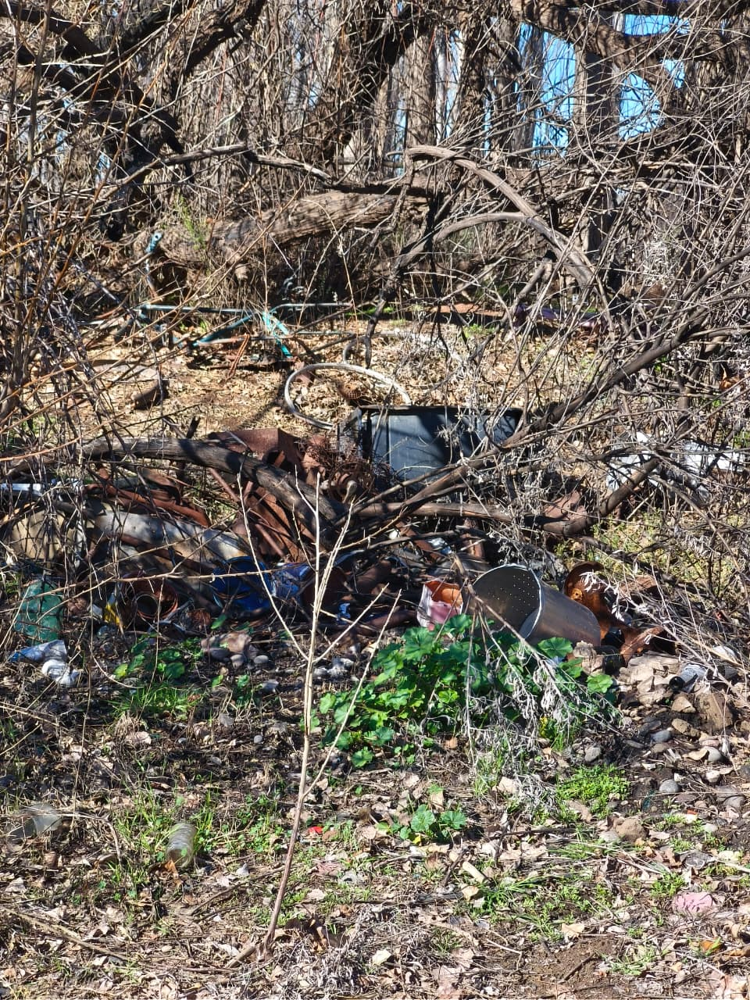

¿Alguna vez te has preguntado en qué afectan los microbasurales?
Los microbasurales se han vuelto muy comunes últimamente en nuestra región. En este artículo vamos a explorar sus consecuencias y qué podemos hacer para prevenirlos.

¿Qué son los microbasurales?
Un microbasural es un terreno baldío o un espacio público de menos de una hectárea donde se arroja basura de forma ilegal y desorganizada. Conocer cómo se forman es el primer paso para cuidar nuestro entorno.
¿Qué daños causan?
Los daños que generan son ambientales: contaminan el suelo y el agua subterránea con líquidos tóxicos llamados lixiviados.
- Riesgo para la salud: atraen ratas, insectos y otros animales que transmiten enfermedades.
- Problemas urbanos: generan malos olores y arruinan el paisaje.
¿Cómo podemos evitarlo?
Reciclar y organizar la basura en casa para reducir el volumen en la calle.
Denunciar: avisar a las autoridades locales si se detecta a personas arrojando basura en lugares prohibidos.
Puede que evitar un microbasural para algunos sea una acción pequeña, pero para otros, para nosotros, es una acción grande.